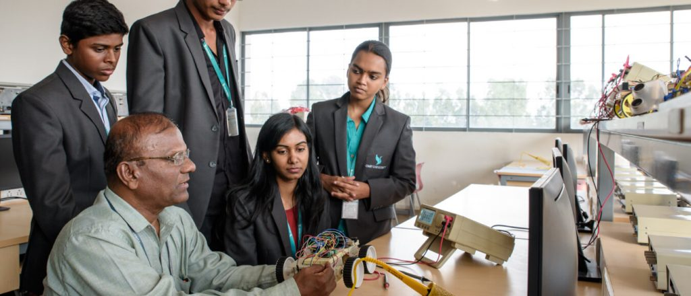

Pofessional Faculties and Technologies in CMRIT
Introduction of CMRIT Faculties and Technologies
Since its inception in the year 2000, CMR Institute of Technology has always strived for excellence. It boasts a state-of-the-art facility that is conducive to the learning and the overall personality development of its students, making it one of the best private engineering colleges in Bangalore.
Enrolling in the best engineering courses in Bangalore allows students to hone their analytical skills, allowing them to find gainful employment upon completion of the course.
Outcome-based education
An engineering course is a result-oriented education that provides the student with a stable and reliable career path. Because the world is moving toward greater technological advancements in every field, good engineers will have plenty of job opportunities.
There are many private engineering colleges in Bangalore, but if you want to pursue an engineering degree, you should think about the best option. CMRIT, which is located in the heart of the city in Whitefield which hosts hundreds of IT and Engineering companies, has accomplished faculty who have dedicated their lives to helping students achieve their full potential which has resulted in a sound placement record.
Qualified and well-trained Professionals
To provide quality education to our bright and promising students who come to us from all over India and abroad, we have hired the best professionals as faculty. You will find the professors known for their excellence in academics and research on our campus be it Computer science engineering, electronics and communication engineering, electrical engineering.
The All India Council for Technical Education (AICTE) in New Delhi has approved CMRIT, which is affiliated with Visvesvaraya Technological University. On a regular basis, we have industry connections and our students visit IT giants such as Infosys, TCS to interact with the professionals and visualize Industry requirements. We began this programme in 2000, and many of our graduates have attained leadership positions globally.
Innovative Pedagogy in the Classroom
Through innovative pedagogy in the classroom, we provide our students with a world-class education. Multiple centers of excellence have been established in areas such as data-driven internet of things (IoT), modeling of dynamic systems, machine intelligence, big data, integrated circuits, signal processing, additive manufacturing, sensors and Nanoelectronics, and natural resource management, materials science, and many others.
Through hands-on experience and projects, students gain in-depth knowledge of these industry-specific disciplines. We encourage our students to use their creative minds to come up with futuristic ideas in addition to advanced learning. We assist them in bringing their ideas to life and seek out industrialists interested in investing in the technology and startup ecosystem is thriving at CMRIT with several of our students having startups.
Advanced Technical Labs
Our technical labs are more than just places to finish projects and practice skills. They are always buzzing with new ideas and innovation. The facilities are up to date, and students get hands-on experience to better understand concepts and have the chance to invent new applications and gadgets.
Makerspaces
We have produced thousands of successful engineers over the years as one of the best engineering colleges in Bangalore and Karnataka. They’ve had equal success in large corporations and small businesses, and they’ve been involved in nation-building for more than two decades.
Visual learning
We place a strong emphasis on theory and understanding concepts such as Artificial Intelligence, Machine learning, Deep learning, Internet of things. We do not solely rely on the method of reading textbooks. We place a great deal of emphasis on the value of visual learning. We’ve included a variety of videos, diagrams, models, charts, and other resources to help students better understand and apply what they’ve learned in class.
Pursue a course in CMRIT
If you intend to pursue your engineering course from CMRIT, you need to have the following-
Candidate must qualify in one of the following entrance exams: CET/ COMED-K / JEE / AIEEE.
Students must have passed the 2nd PUC/ 12th / Equivalent Exam with English as one of the languages and obtained a minimum of 45% of marks in aggregate in Physics and Mathematics along with Chemistry / Biotechnology / Biology / Electronics/ Computers. (40% for Karnataka’s reserved category candidates).
Diploma holders in engineering with a minimum grade of 50% in the final examination, conducted by the Board of Technical Examination, Government of Karnataka or its equivalent, are eligible for admission to the corresponding branch of Second Year engineering. Candidates must take the Common Entrance Test (DCET) for Diploma students conducted by the CET Cell, Govt. of Karnataka.
Leave a Comment